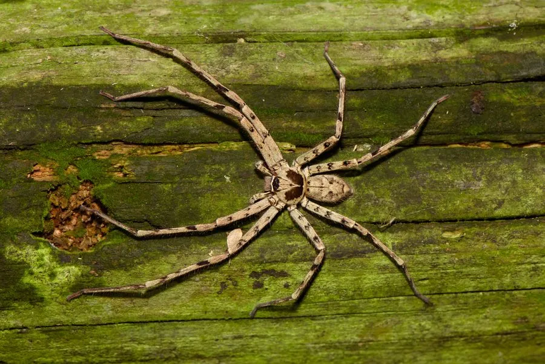

蛛形动物 · 动物界
白额高脚蛛 Heteropoda venatoria

南方室内常见的大型蜘蛛，腿长足展可达十余厘米，不结网而四处游走捕食蟑螂，对人基本无害，是家庭中常见的大蜘蛛。
- 分类
- 门节肢动物门纲蛛形纲目蜘蛛目科巨蟹蛛科属巨蟹蛛属
- 栖息环境
- 人类居所的墙壁、墙角、屋顶，以及树皮、石缝等隐蔽处
- 地理分布
- 亚洲热带与亚热带地区，随人类扩散到全球温暖地区
- 保护级别
- IUCN 暂无评估；中国未列入国家重点保护名录
物种志
白额高脚蛛雌蛛体长 20–30 毫米，雄蛛略小，足展可达 10–13 厘米，是常见蜘蛛中体型较大的一种。它头胸部呈灰褐或黄褐色，中央有浅色的纵向斑纹，头部前端有一条白色横带，因此得名“白额”；八足细长，布满短毛，行动迅速。
它原产于亚洲热带和亚热带地区，现已随人类活动扩散到全球温暖地区，中国南方及北方室内均有分布。它不结网，而是夜间在墙壁、屋顶、墙角四处游走，捕食蟑螂、蛾类、蝇类等昆虫，尤其擅长捕捉蟑螂，是居室里的益虫。雌蛛产下扁圆形的卵囊后会随身携带，幼蛛孵出后独立生活。白额高脚蛛毒性弱，一般不会主动咬人，受惊时会迅速逃跑；室内见到时不必打死，可让它继续捕食害虫。
形态与习性
- 食性蟑螂、蛾类、蝇类等昆虫
- 体长雌蛛 20–30 mm，足展可达 10–13 cm
- 寿命约 1–2 年
- 繁殖卵生，雌蛛携带扁圆形卵囊
- 活动节律夜行性，四处游走捕猎
- 毒性毒性弱，一般不主动咬人，对人无害
趣味知识
- 白额高脚蛛足展可达十余厘米，是南方家庭中常见的大型蜘蛛。
- 它不结网，靠快速游走捕食蟑螂，被称为“蟑螂杀手”。
- 白额高脚蛛一般不主动攻击人，室内见到不必惊慌，可让它捕食害虫。